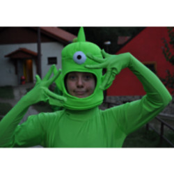

Ročník 2016
Expedice Mars 2049, Stříbro 2016

Když jsme se loučili s dětmi v loňském roce slovy „zase za rok“, netušili jsme, že už má pan Topinka jiné záměry a aniž by nám cokoli řekl, nějaké varování či upozornění, v dalším ročníku akcí CK Topinka se Tábor plný překvapení již neobjevil. No, nedalo se nic dělat a narychlo jsme sháněli jiného zřizovatele pro naše snažení. Nakonec jsme se dohodli s Káťou a Tomášem z Ranče v údolí u Stříbra na řece Mži. Když jsme se jeli podívat na místo v únoru, vypadalo všechno idylicky. Krásná krajina, hezká říčka, úsměvy, super gulášek… Jediná věc nám tak trošku nevyhovovala. Vlastně dvě věci – hygiena a to, že hlavním programem by měli být koně. Nakonec jsme se dohodli na nějakém kompromisu a příprava mohla začít…
Tentokrát jsme se vydali na neprobádaný Mars, abychom se stali prvními osadníky a dobyvateli téhle rudé planety. Přes počáteční nedůvěru dětí, které byly přece jen zvyklé na jiný styl, a hlavně daleko menší nároky, se nám podařilo přenést nadšení i na většinu z nich. Oddíly přijaly nesmrtelná jména budoucích vítězů: Orbit-ki, M-záci, Akta M, Umpalalumpové, Zelení Raúlíci a Vetřelci. A probíjely se náročným programem, soutěžemi i hrami. Každé dopoledne bylo klání přerušeno povinnou péčí o koně, kterou všichni přijímali s různým stupněm nadšení a já, přiznávám, spíše se sebezapřením. Bohužel přesto i v Katce s Tomášem, tak i v jejich chráněnce Krystýně přetrvával názor, že nejsme pro Ranč v údolí ti praví. Snažili jsme se, ale bohužel stále naráželi na větu „no, my jsme zvyklí to dělat jinak…“. Kristýna se dokonce rozhodla naši hru a náš způsob práce bojkotovat, a tak její oddíl nakonec odjížděl z tábora celkem právem zklamaný. V půlce tábora se navíc bohužel potvrdily i naše obavy z nedostatečné hygieny a postihla nás opravdu nezvykle silná epidemie střevních a žaludečních problémů. Byli jsme nuceni přijmout výjimečná hygienická opatření, a dokonce konzultaci s epidemiologem, abychom situaci zvládli. To se nakonec podařilo a my jsme zdárně dotáhli tábor do vítězného konce. Palmu vítězství nakonec utrhli Orbit-ki a po právu si odvezli zlatý poklad Marsu. Jsem přesvědčený o tom, že většina dětí nakonec odjížděla domů spokojená a jistě na tábor do Ranče v údolí znovu rády přijedou. Jen možná některé budou zklamané, že už tam nebudeme my…